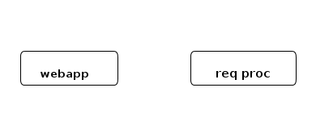
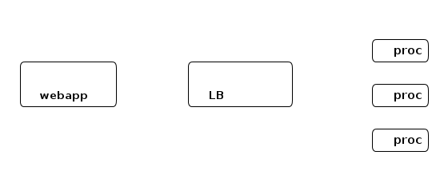

/etc/services
Discovery! which nodes do processing?
 Balance requests among different nodes with LB, however, an anti-pattern! As this now introduces a single point of failure
How do various services sync on their activities & come to agree on the basic information about their environment
Building Chubby was an engineering effort required to fill the needs mentioned above; it was not research. We claim no new algorithms or techniques. The purpose of this paper is to describe what we did and why, rather than to advocate it. – Mike Burrows, Google
We'll revisit this session after leader election
LockDelay parameter used to ensure other services cannot acquire the lock until this time after Lock expiry
CP model, ensured via Raft consensus by consul servers Three modes
service/<service-name>/leader
(Key,LockIndex,Session) acts as a unique sequencer
LockDelay specifiable
#-*- restclient -*- # K-V store # index GET http://localhost:8500/v1/kv/?recurse # Get a value from the k-v store # also consistent? and stale? modes GET http://localhost:8500/v1/kv/foo # update the same value? PUT http://localhost:8500/v1/kv/foo ContentType: text/json barbar # check & set PUT http://localhost:8500/v1/kv/foo?cas=2834 bar # Wait for change (and for a time of 120s) # (setq restclient-same-buffer-response t) GET http://localhost:8500/v1/kv/foo?index=2866&wait=120s # Services GET http://localhost:8500/v1/agent/services # Incomplete # Session PUT http://localhost:8500/v1/session/create { "LockDelay": "60s", "Name": "ceph-service-lock", "Node": "node2", "Checks": ["service:ceph"] } ## Leader Election PUT http://localhost:8500/v1/kv/service/ceph/leader?d8b758ac-6810-a093-a839-76ee0969898c node2 # Watch for the key changes GET http://localhost:8500/v1/kv/service/ceph/leader # Step down PUT http://localhost:8500/v1/kv/service/ceph/leader?release=3eeab2e5-4c1a-fd92-8beb-9fcc795d8ee6